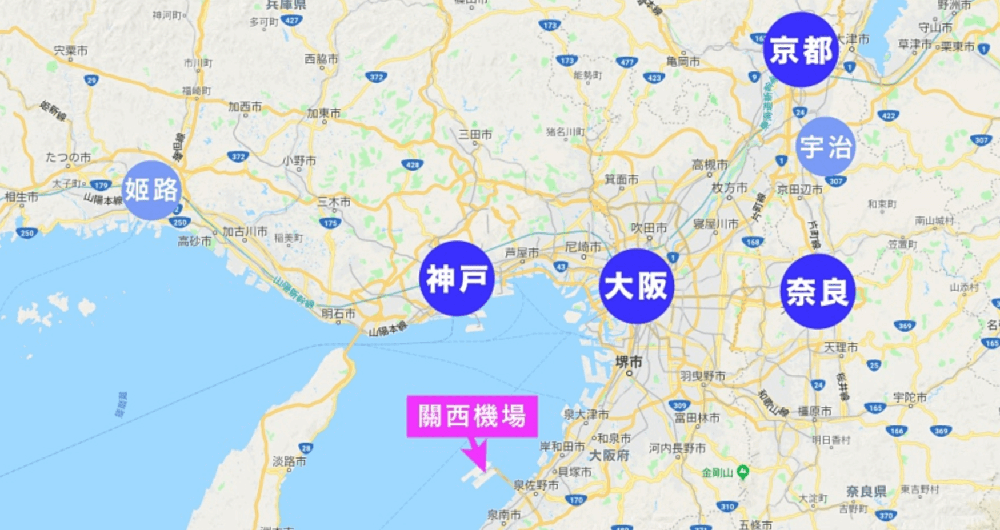

地理位置
大阪市位於大阪府中部的大阪灣沿岸地區，面積223平方公里，在政令指定都市中排名第17位，僅大於埼玉市、堺市和川崎市。市區大部分位於大阪平原上。大阪平原是一座沖積平原，地勢平坦。大阪市東部的上町台地則是市內地勢較高的地區，北起大阪城一帶，南至住吉大社附近，寬度約2至3公里，長度超過10公里，是一座沖積台地。
為了擴大陸地面積，大阪曾多次進行填海。大阪的大規模填海開始於17世紀的新田開發。現在大阪市區面積的四分之一都來自於填海。大阪市沿海的夢洲、舞洲、咲洲等島嶼也是由填海造陸而成的人工島。 大阪市河流眾多，有「水都」之稱。這也使得大阪市橋樑眾多，江戶時代的大阪有「八百八橋」之稱。然而在近代，大阪的許多河道都已被填埋，用來修建公路或建築。低窪的地形導致大阪在歷史上水害頻發。江戶時代中期，幕府對原本匯入淀川的大和川進行人工改道，使其改自大阪南部入海，使得水患大幅減少。
名稱由來
現今的「大阪」名稱則出現於江戶時代，並在明治時代取代「大坂」而成為正式地名。之所以將「坂」改寫為「阪」，是因為「坂」字可拆解為「土反」，帶有不祥的含意。另一說法是，明治新政府認為「坂」字又可拆解作「士反」，也就是武士叛亂的意思，當時官員在文書上為了避諱而改用「阪」字。
相對位置
